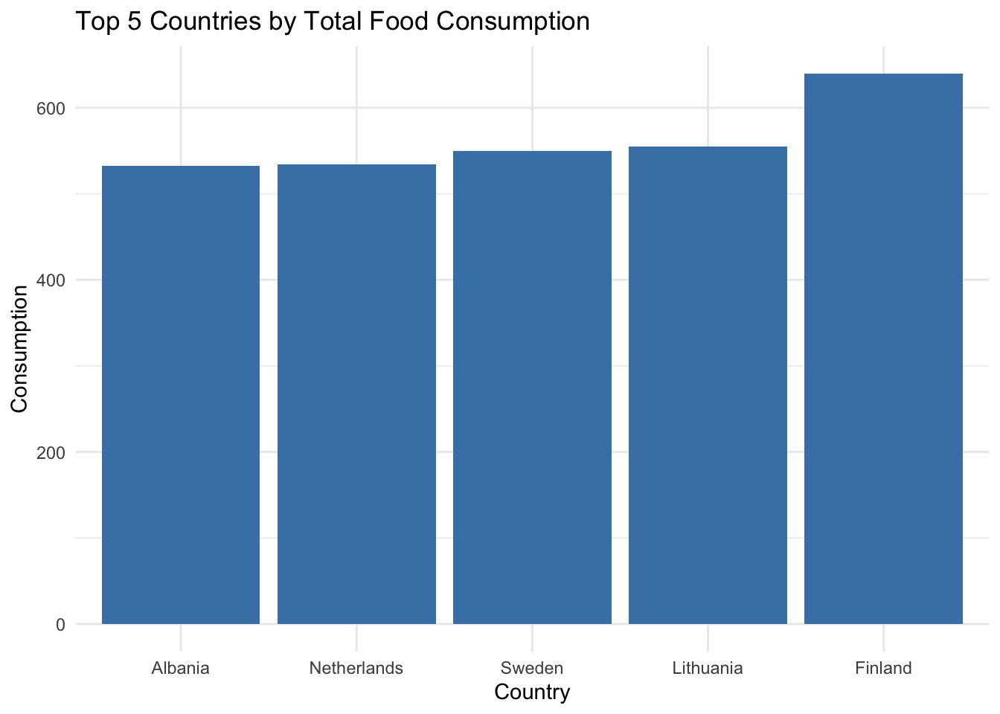

#Download Food Consumption and CO2 Emissions Datasetfood_consumption <- readr::read_csv('https://raw.githubusercontent.com/rfordatascience/tidytuesday/main/data/2020/2020-02-18/food_consumption.csv')
Rows: 1430 Columns: 4
── Column specification ────────────────────────────────────────────────────────
Delimiter: ","
chr (2): country, food_category
dbl (2): consumption, co2_emmission
ℹ Use `spec()` to retrieve the full column specification for this data.
ℹ Specify the column types or set `show_col_types = FALSE` to quiet this message.
# Install via pak::pak("dslc-io/tidytuesdayR")tuesdata <- tidytuesdayR::tt_load('2020-02-18')
---- Compiling #TidyTuesday Information for 2020-02-18 ----
--- There is 1 file available ---
── Downloading files ───────────────────────────────────────────────────────────
1 of 1: "food_consumption.csv"
tuesdata <- tidytuesdayR::tt_load(2020, week =8)
---- Compiling #TidyTuesday Information for 2020-02-18 ----
--- There is 1 file available ---
── Downloading files ───────────────────────────────────────────────────────────
1 of 1: "food_consumption.csv"
food_consumption <- tuesdata$food_consumption
# 2.1 Data Dictionary (View Data)food_consumption
# A tibble: 1,430 × 4
country food_category consumption co2_emmission
<chr> <chr> <dbl> <dbl>
1 Argentina Pork 10.5 37.2
2 Argentina Poultry 38.7 41.5
3 Argentina Beef 55.5 1712
4 Argentina Lamb & Goat 1.56 54.6
5 Argentina Fish 4.36 6.96
6 Argentina Eggs 11.4 10.5
7 Argentina Milk - inc. cheese 195. 278.
8 Argentina Wheat and Wheat Products 103. 19.7
9 Argentina Rice 8.77 11.2
10 Argentina Soybeans 0 0
# ℹ 1,420 more rows
── Attaching core tidyverse packages ──────────────────────── tidyverse 2.0.0 ──
✔ dplyr 1.1.4 ✔ readr 2.1.5
✔ forcats 1.0.0 ✔ stringr 1.5.1
✔ ggplot2 3.5.1 ✔ tibble 3.2.1
✔ lubridate 1.9.4 ✔ tidyr 1.3.1
✔ purrr 1.0.2
── Conflicts ────────────────────────────────────────── tidyverse_conflicts() ──
✖ dplyr::filter() masks stats::filter()
✖ dplyr::lag() masks stats::lag()
ℹ Use the conflicted package (<http://conflicted.r-lib.org/>) to force all conflicts to become errors
library(rnaturalearth) # for country boundaries library(sf) # for spatial viz
Linking to GEOS 3.13.0, GDAL 3.8.5, PROJ 9.5.1; sf_use_s2() is TRUE
library(dplyr)library(ggplot2)
# 2.3 Load Data tuesdata <-tt_load('2020-02-18')
---- Compiling #TidyTuesday Information for 2020-02-18 ----
--- There is 1 file available ---
── Downloading files ───────────────────────────────────────────────────────────
1 of 1: "food_consumption.csv"
# A tibble: 22 × 4
country food_category consumption co2_emmission
<chr> <chr> <dbl> <dbl>
1 Argentina Pork 10.5 37.2
2 Argentina Poultry 38.7 41.5
3 Argentina Beef 55.5 1712
4 Argentina Lamb & Goat 1.56 54.6
5 Argentina Fish 4.36 6.96
6 Argentina Eggs 11.4 10.5
7 Argentina Milk - inc. cheese 195. 278.
8 Argentina Wheat and Wheat Products 103. 19.7
9 Argentina Rice 8.77 11.2
10 Argentina Soybeans 0 0
# ℹ 12 more rows
# 2.7 Fix food_category Variable fcc <- food_consumption |>mutate(food_category =fct_recode(food_category,"Lamb"="Lamb & Goat","Dairy"="Milk - inc. cheese","Wheat"="Wheat and Wheat Products","Nuts"="Nuts inc. Peanut Butter"))fcc$food_category #2.8 make sure the new values of food_category variable are as expected
# 3 - Which 5 countries consume the most food?top_five_countries <- fcc |>group_by(country) |>summarize(consumption =sum(consumption)) |>arrange(desc(consumption)) |>head(5)top_five_countries
# A tibble: 5 × 2
country consumption
<chr> <dbl>
1 Finland 640.
2 Lithuania 555.
3 Sweden 550
4 Netherlands 534.
5 Albania 533.
# Make The Plot ggplot(top_five_countries, aes(x =reorder(country, consumption), y = consumption)) +geom_col(fill ="steelblue") +labs(title ="Top 5 Countries by Total Food Consumption",x ="Country",y ="Consumption") +theme_minimal()

# 4 - Which Top 5 Countries Consume Each Food?#Find The Top Five Countries By Consumption For Each Food Category top_five_per_food <- fcc |>group_by(food_category, country) |>summarize(consumption =sum(consumption), .groups ="drop") |>arrange(food_category, desc(consumption)) |>group_by(food_category) |>slice_head(n =5)
#Plot The Visualization Using geom_col and facet_wrapggplot(top_five_per_food, aes(x =reorder(country, consumption), y = consumption)) +geom_col(fill ="steelblue") +geom_text(aes(label =round(consumption, 1)), hjust =-0.1, size =3) +# Adjusted hjust for spacingfacet_wrap(~ food_category, scales ="free_y", ncol =2) +# Changed scales to "free_y"coord_flip() +labs(title ="Top 5 Countries by Consumption for Each Food Category",x ="Country",y ="Consumption (kg/person/year)" ) +theme_minimal()